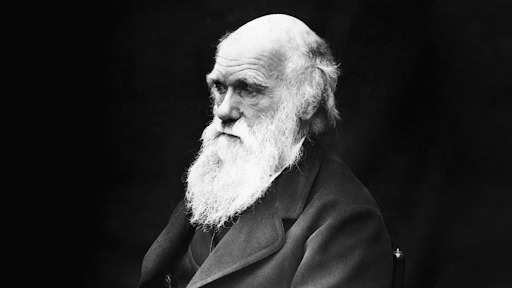
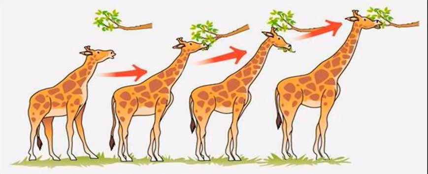
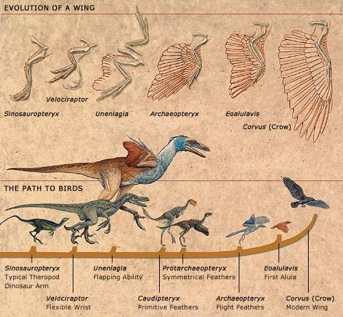

Teoria de Darwin
Charles Darwin era um naturalista britânico que propôs a teoria da evolução biológica por seleção natural.

Darwin definiu evolução como "descender com modificações", a ideia de que as espécies mudam ao longo do tempo, dão origem a novas espécies e compartilham um ancestral comum.
O mecanismo que Darwin propôs para evolução é a seleção natural. Em razão dos recursos limitados, organismos com características hereditárias que favoreçam a sobrevivência e a reprodução tendem a deixar mais descendentes do que os demais, o que faz com que essas características aumentam em frequência ao longo das gerações.
A seleção natural faz com que as populações se tornem adaptadas, ou cada vez mais bem integradas a seus ambientes ao longo do tempo. A seleção natural depende do ambiente e requer a existência de variações genéticas em um grupo.
Exemplo 1:

Podemos exemplificar como a seleção natural atua utilizando o clássico exemplo do pescoço da girafa. De acordo com as ideias de Darwin, existiam girafas de pescoço longo e girafas de pescoço curto. As girafas de pescoço curto apresentavam maior dificuldade de conseguir alimento em locais mais altos, quando os vegetais mais baixos estavam escassos. As girafas de pescoço longo apresentavam vantagem, uma vez que conseguiam alimentar-se em árvores com a copa mais alta.
Exemplo 2:
Outro exemplo fascinante de evolução é o pássaro. Os pássaros evoluíram a partir de répteis ancestrais há cerca de 150 milhões de anos e se diversificaram em uma ampla variedade de espécies, desde pequenos colibris até grandes albatrozes.
Uma das características mais notáveis da evolução dos pássaros é o desenvolvimento de penas e a capacidade de voar. As penas evoluíram a partir de escamas de répteis ancestrais e se diversificaram em uma ampla variedade de formas e núcleos, exercendo diferentes propósitos, como isolamento térmico, atração sexual e camuflagem.

A capacidade de voar também é uma adaptação evolutiva impressionante. Os pássaros desenvolvem ossos leves e poderosos para interação suas asas, permitindo-lhes se moverem rapidamente pelo ar e escaparem de predadores
Outra característica fascinante da evolução dos pássaros é sua inteligência. Algumas espécies de pássaros, como os corvos e os papagaios, demonstram habilidades cognitivas avançadas, como resolução de problemas, uso de ferramentas e até a mesma linguagem. Essa inteligência é um resultado da seleção natural, favorecendo indivíduos que podem se adaptar a diferentes ambientes e situações.
fonte
https://pt.khanacademy.org/_render
https://comciencia.scielo.br/scielo.php?script=sci_arttext&pid=S1519-76542009000300011&lng=pt&nrm=iso&tlng=pt